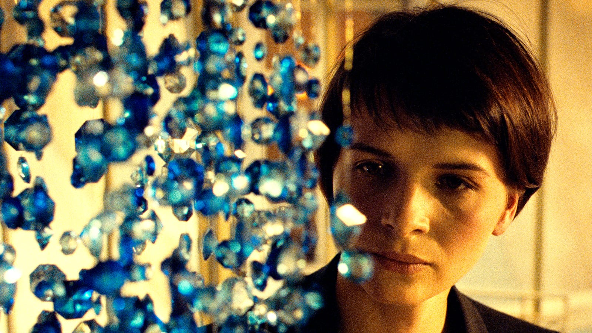
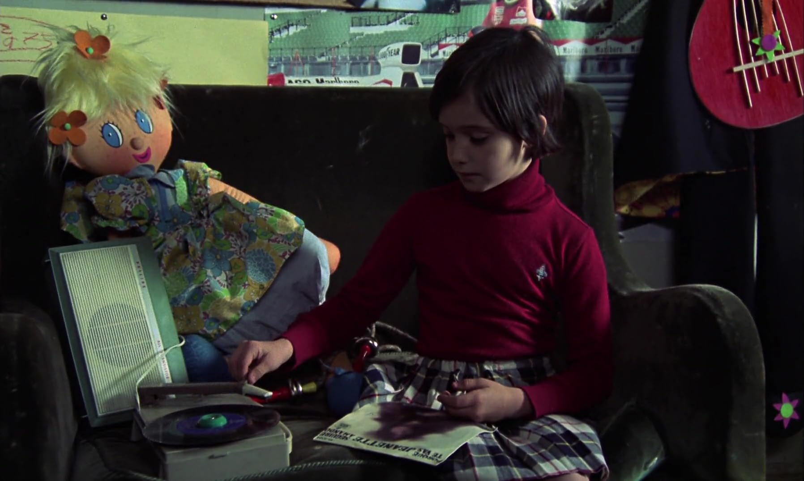
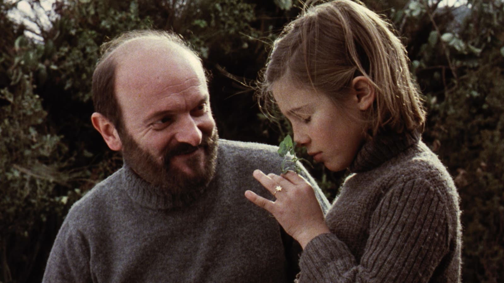
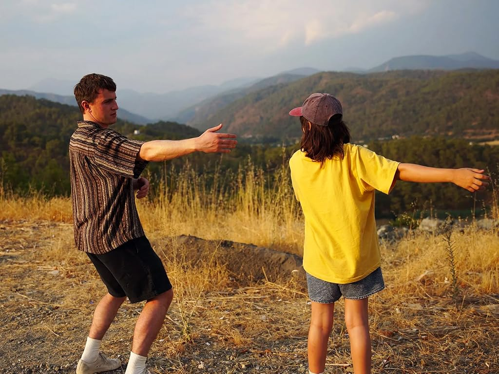
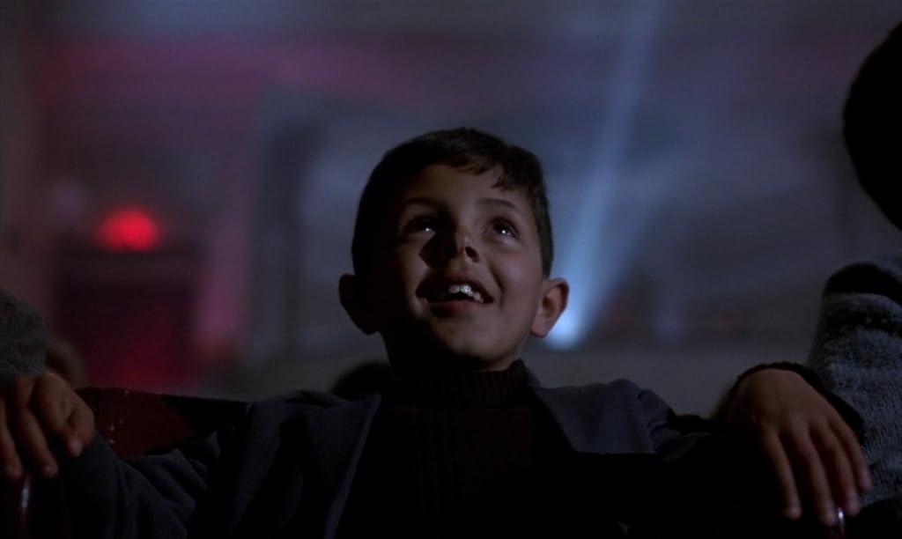

A cinematic year
“I’ll just record it in my little… mind camera”
— Sophie, Aftersun, 2022
When I created this blog I was ready to explore many diverse topics. I have been thinking for quite some time about creating this kind of 2025 movie recap… Except it won’t really be a movie recap.
I like movies.
I chose one of my favorite movies as my first watch this year. If you’ve read my previous shamefully half-incomplete post, you might have recognized it. I’m laughing while writing this because I can’t imagine myself as one of those popular bloggers constantly cross-referencing their own posts. I’ll strive to keep this blog alive for many years so one day I get to self-reference this self-reference and start laughing at it again. I can’t explain why, but Only yesterday is definitely my thing. A woman trying to reflect on her childhood memories? You’ll find more of that in my 2025. For me, this movie would mark the start of a year brimming with emotions.

I can taste that pineapple
[Image: Studio Ghibli]
I warned you. We’re not here to analyze movies.
I try to put a lot of effort into every post, but this one might be a bit different. Don’t expect too much coherence. You should read this as a labyrinthine, natural, intimate peep into my little… mind camera.
You can’t rate your feelings
Come to Sing Sing. As much as I’d like this to be a musical (I think I’m starting to love musicals!), it’s just the title of a drama, but what a drama. It was only my third watch of the year, but it definitely made something click. It would change my perception of art for the rest of my year life. Sing Sing is just the name of a prison. The movie is based on a real story. Prisoners perform plays. And most of the actors play themselves! While watching this, I could only think that I was loving it, but it felt somewhat cliché (any prison drama enjoyers out there?). It’s just that… I liked it. So who cares? Some things just can’t be explained. Promise I won’t need to use the word cliché again.
Purple is the color of magic
[Image: A24 / Black Bear Pictures]
As you might have already guessed from the constant bombardment of movie links which, fear not, won’t stop throughout this post, I use letterboxing Letterboxd. I love adding the movies I see to my diary, where I sometimes also add some comments, in Spanish because, after all, it’s my diary. You can also add a rating from 1 to 5. You see, even if you don’t use Letterboxd and were just to play this inoffensive rating game with some friends after leaving the theater, you’d inevitably shift your perspective. You’d become a cold-minded, analytical machine. This scene was cool, but the script was something my dog could write. And this actor… What a shame. Well, maybe you don’t relate to this. I did feel like that sometimes. If I have to rate a movie I see, I need to think along those lines. I feel the need to judge.
Enough of this crap. I just want to enjoy the movies. Since that day, I’ve never rated a movie again. I just add them to my diary and optionally hit a like. Not sure what likes mean for others, but I defined my own meaning for them. If I like a movie it means I’d watch it again. If I don’t hit a like I’ll most likely not rewatch it. I say most likely because it already failed a couple of times (Romería I’m looking at you).
Since I stopped rating movies, I’ve achieved a sense of relief. I can now just feel them. You can’t rate your feelings.
Slow down, slow down!
Beauty lies in routine. That’s what some think (those perfect days come to mind). And we’ll have more to say about that. For me, the decision to watch a movie comes quite naturally. Especially after a long day of work or study, I might feel like I’m sinking. Then I just need to immerse myself in a movie. There’s nothing forced… Or that’s what I’d like to think.
Evil lies in routine. That’s another way to put it. I said my urge for movies is natural, so you wouldn’t be surprised when I say I was going to the cinema at least four times a week. Do experiences lose their charm when they become routine? That’s what I started pondering. Am I spoiling my experiences? Are my feelings not natural anymore?
The last movie I watched in February also made me reflect. I left the theater confused. I didn’t know if I just didn’t enjoy the movie as much, or if I was just not in the mood. That same week I had rewatched one, two of my favorite movies (I’m sorry Karol Karol). Maybe it was time to slow down…

Hanging memories
[Image: MK2 / Criterion]
I decided to limit myself to one movie a week. I wanted to find out if I could get that charm back somehow (if I ever lost it in the first place). Incidentally, March would screen for me all four Evangelion movies, one each week. Unbelievable timing I’d say.
There was nothing too special about Evangelion. I’ve never quite been a fan. But anime has been important for me. In fact, anime was the reason I started watching movies! Anime clearly has a lot to say beyond kid shows and action-packed teenager-with-superpowers content. Of course I also started watching shows like Dragon ball and Naruto, and there’s also some nostalgia in them, but there’s much more waiting for you. If you’re curious, go take a look at one, two, three that have a special meaning for me. As time passed, I would also watch some older anime, trying to trace back the timeline, wondering how things were in the past. But this had a limit. I wanted to learn more, I was curious about what people felt like when watching movies in the past. So I figured it was time to watch some classical movies… And somehow this is how I jumped straight into cinema. I still love finding some anime movies in the theaters every now and then, so I couldn’t say no to the Evangelion tetralogy.
Well, this is not an anime post, so I guess it’s time to move on. In April I was still trying to watch at most one movie a week, and in fact I really enjoyed one of my favorites from the year. It was a refreshing experience, but I also felt I was forcing myself too much. From May onwards, I would just go whenever I felt like going, no more constraints. I still fight with this “Am I going too much?” feeling from time to time, but in the end I just try to accept my movie thirst as a positive feeling.
Movies are not everything
I value experiences. It’s true, a movie can be an experience. But I started thinking whether this was the whole picture. Perhaps the experience I need is more like going to some place, releasing some emotion, and coming back. Does it sound strange? In practice, for me this meant starting to go more to other kinds of events like theater and music, not only cinema. And the feeling is proving not so different. Maybe movies are not everything…?
In that sense, this year I had some enlightening non-cinema experiences. You can’t imagine how good it felt to watch a… Talk? Artistic representation of the history of masks? Even the actor (or actress?!) was anonymous! I found the idea fascinating. If I ever get to finish writing a novel, you’re most likely not going to find my name on it. Oh, and music? Actually, I barely listen to music… Maybe it’s this “routine is evil” fear again. I encountered some of my favorite music straight from some movie/show soundtrack. I want to keep it as something special. Anyway, listening to live music is another experience. I really appreciated my workmates inviting me to a jazz concert for my birthday. I couldn’t think of a better gift. It was so good that this idea of learning to play an instrument remained stuck in my mind since that day. Today I can say I’m at least trying! Speaking of concerts and another beautiful coincidence, while looking for the YouTube links above I found out Valeria Castro is giving a concert in Madrid at the start of 2026. I met her thanks to the credits song from El 47, a Catalan movie I watched three times last year, the third one being my last watch of 2024. I’m listening to the song again while writing this… Of course I’m going to the concert.

I can hear Jeanette singing
[Image: Elías Querejeta P.C. / Criterion]
I also wanted to extend this realization to my Letterboxd. To be honest, the main reason why I love Letterboxd is keeping my movie diary. I just log the movies I see there, also noting down the day and the theater (maybe even some quite personal commentary). Sometimes I just open my Letterboxd and scroll through my diary and remember all these good experiences… In fact, I’m doing this a lot while writing this post. I guess it’s my personal serotonin. Because of that, I decided I would just start logging some other events I wanted to remember in the future. Who cares if the app is supposed to be only for movies? I don’t. If you read this, you like the idea and don’t have a Letterboxd account but watch even just one movie a month, I highly encourage you to join. Oh sweet memories…
Is this my solo…?
A quick look at my 2025 diary reminds me that, this year, about 85 of 133 experiences have been alone. No, I don’t write down the people I go with (maybe I should?), but I guess I’m not bad at remembering that. There are many conclusions one could draw from this. The easiest one would probably be that, after all, I don’t have many friends, and maybe even fewer of them would be willing to join me in these events. Another completely honest view is that I don’t want to be that annoying guy who is asking you every week if you want to go to the cinema, because, as you already know, I go quite a lot.
The most important conclusion (or rather a consequence of the others?) is that, in fact, I enjoy solitude. I’ve been talking to some friends about this, and it seems I’m not the only one who needs to be alone at times, but they’d rather do that in the intimacy of home. Personally, intimacy can just as well be a mental state, and I like the idea of going to these rooms full of people I don’t know who are there experiencing the same things as I am (perhaps like certain people looking for an elephant in a distant city). But this is just half of the picture, because I also like sitting in the first or second row, so that I have nobody in front of me and I get a stronger impression of being alone… I heard a random person sharing this reflection one day at the cinema. We might not be that different. It’s a weird mix I guess.

The smell of silence
[Image: Elías Querejeta P.C. / Criterion]
Overall, I think most of my best experiences going to the cinema happened alone. This intimate setting makes it easier for me to let go of my emotions. But it’s not like I try to hide them when I go with others. At least I know it’s something I can’t control. But this is not always true! Can’t forget that amazing cinema day I shared with seven workmates. That will be hard to beat. In fact, I also realized I’ve never watched my favorite movie alone. I just like sharing it with others (if you still don’t know the movie, you have until the next section to make your guesses!). Someone told me this might be because I’m not prepared to face such strong emotions all by myself. I like to think that’s not the case. If the day comes then so be it. I’ll enjoy it to the fullest.
As I said, don’t be fooled by my misanthropic soliloquy. If you know me and want to go to the cinema together, you’ll make me happy. Just tell me!
Experience through repetition
Beauty lies in routine. Yes, I’m repeating myself because this section is about repetition. Maybe repetition is the key.
The first time I watched Aftersun (whoops wrong movie) Aftersun, I was far from imagining this would be my favorite movie. It was all by chance. I didn’t know about it and a friend told me we should go watch it. Surprisingly, this is the same person who introduced me to Letterboxd (thank you Furtis). Then again, in less than a month we went back to watch it with some other friends. I started to like it more, but it was still just a really good movie for me. It was only by the fourth time that I could finally say “I have never felt something like this, it must be my favorite”. And that just happened this year! I appreciate Aftersun now being basically a cult movie. That means I can find a theater screening it every few months. The fourth time I found out where the screening was thanks to an unknown Letterboxd user. Yes, I like to stalk random people going to the same theaters as me (Knock, knock, FBI here). In fact, I already found the next screening for March next year. Can’t wait for that.

A perfectly imperfect copy
[Image: A24 / MUBI]
This isn’t my only supporting example for the magic of repetition. My biggest discovery this year has truly been Carla Simón. I started watching Verano 1993 and I liked it so much that I went right after that to another theater to watch Romería. I felt Verano 1993 was a really good movie and Romería was okay. By the end of the year I had watched her movies (including Alcarràs) seven times. Every watch was better, and by now Verano 1993 is one of my favorite movies and I also learned to enjoy Romería on its own, which was my last movie this year, third watch! On my second watch of Romería I even had the chance to thank Carla Simón personally. Of course, I was so shy that I could only say thanks and leave. I think it was the first time I felt such respect for someone that I couldn’t even find words to tell her. I’ll definitely watch anything she directs.
One movie I had high expectations for this year was Sentimental value. In the end, I didn’t like it that much. Yes, hype is usually the problem. I can imagine some things from the movie I just wouldn’t like no matter how many times I watched it, but this idea of repetition made me think again. Maybe I just need someone to push me for a rewatch, just like with Aftersun. If this somehow ends up being my favorite movie in three years at least I’ll be able to say I saw that coming. There must be so many movies I only watched once that would deserve a second chance… One thing I’m sure about is that I’ll never leave the cinema after a first watch saying “This is my favorite movie”. That’s just impossible.
Since we’re talking about repetition, you probably know this cringey “History always repeats itself” saying. If this applied to my cinema experiences, I would surely repeat this year.
Dear cinemas
One of my best cinema experiences (if not the best) this year was rewatching Cinema Paradiso after nine years. I can assure you a great part of this was watching it in a cinema, actually a very special, single room cinema, which has been around for almost fifty years in a hidden corner of Madrid. Only me and one couple in the whole room. What an emotional evening. I also wrote a quite personal review which I cherish the most. It seems I was inspired. I had no particular ties with that cinema. In fact, it was my first time there, but it felt like home.
Going to the cinema is important for me. I decided not to watch movies at home, although I broke this a few times throughout the year. Most of the exceptions came from paying for Filmin for one month, since one day I got home and I was so worn out that I didn’t even feel like going to the cinema (am I sinking again?). Shortly after, I would already be craving cinema again. I find the concept of only watching movies in theaters quite romantic. I can’t really decide what to watch besides which cinema to choose. I need to accept whatever they decide to screen. Imagine my joy the day I finally see some long awaited movies being screened. Although most of the time I just see this as a chance to watch some movies I would otherwise postpone to death. Surely I can’t binge watch Italian classics or Japanese classics for the rest of my life, as much as I’d like to…

A radiant smile
[Image: Cristaldifilm]
You might argue going to the cinema so many times is expensive, and you’d have a point. I know I spend way more than the average person, but that’s just my decision, since I watch many premiere movies throughout the year and I like to think I’m supporting independent theaters (I’ve never left a theater feeling it was a loss of money, not even that day). I also acknowledge this idea of going to the cinema is kind of selfish since you can’t enjoy it as much in most cities out there. Thankfully, I live in Madrid (spam incoming!). If you’re willing to restrict your cinema visits to non-premiere movies, in Madrid for example you can go any number of times you want in a year with just 40€ at Cine Doré. At the time of writing this, they’re carrying out some renovations, and meanwhile all their tickets are free! Of course, this is just a temporary exception, but the annual pass is still affordable. Other inexpensive theaters are Cineteca, Sala Berlanga and Círculo de Bellas Artes.
Spending money to go to the cinema is neither a pride nor a shame. For me it grew as a necessity. Some people spend money on traveling, because that’s what they need. They need to break out of their routine, and that’s completely fine. As for me, I travel through cinema. Yes, I know you’ve heard that phrase many times, and I won’t invoke that word I said I wouldn’t use again. But I don’t care. Routine is subjective. That’s how I feel. As for you, do what you need. Do what fulfills you.
If you liked the idea of this post and you want to do something similar for your 2025, I’d love to read about it. I’m sure you also have a place that feels like home. The sports fan goes to the stadium, the teacher to their classroom, the farmer to their field, the sheep to their grassland, the chemist to their lab, the artist to their atelier, the gymbro to their gym… I go to the cinema.
My letter to cinemas:
Dear cinemas,
I love you.
Epilogue
“I had often speculated with images of the future, dreamed of roles that I might be assigned, perhaps as poet or prophet or painter, or something similar. All that was futile. I did not exist to write poems, to preach or to paint, neither I nor anyone else. All of that was incidental. Each human had only one genuine vocation—to find the way to themselves.”
— Hermann Hesse, Demian, 1919
You can’t imagine how much fun I had writing this post (and choosing the stills!). It seems like it got a bit out of hand. Spending these last days going through so many memories of my year… I hope I managed to capture a tiny bit of that.
While finishing this post, one day I took a short break to check whether there was any movie worth watching in theaters that day. After a while I found myself reading the profile of a random Chinese Letterboxd user. Luckily I know a bit of Mandarin (laughing again at my shameless self-references), enough to be able to understand the first sentence in their bio. It reads something like “Movies are merely movies. Many things are way more important”. Simple phrase, hits me hard. I don’t think it contradicts anything I’ve said here. The rest of their bio is the Hermann Hesse quote I included here as a tribute to this user, which I think clarifies what the user tried to convey. I had read nothing by Hermann Hesse, but now I assure you I will, just because of this encounter. I think it’s nice that we share the same sky.
May we meet again soon
[Image: Inicia Films / Avalon]
I hope you don’t mind my Letterboxd hyperlink frenzy throughout the post. I think it’s a non-invasive way of introducing lots of recommendations for you, my dear reader. If I’ve managed to pique your interest in some of them I’ll be satisfied. I tried to include many movies that have been important to me, but I can’t mention everything. If you’re still curious, you can also check a quick list I made of forty of my favorite movies. It is of course beautifully incomplete and I might have missed many great ones. I like dramas. I think that’s all you need to know. Also don’t take my four favorites too seriously, I change those from time to time to give my profile a breath of fresh air.
This year I also started writing. Although it’s nothing too serious, it meant a lot to me. Countless times under the inspiration of my cinema visits I would feel the urge to create something myself. I think breaking that wall between consumer and creator is a natural development for oneself. Ultimately, it is an act of honesty. When you create something, you must first do it for yourself.
Shoot for you. Play for you. Write for you. Everything else is incidental.
See you next year.